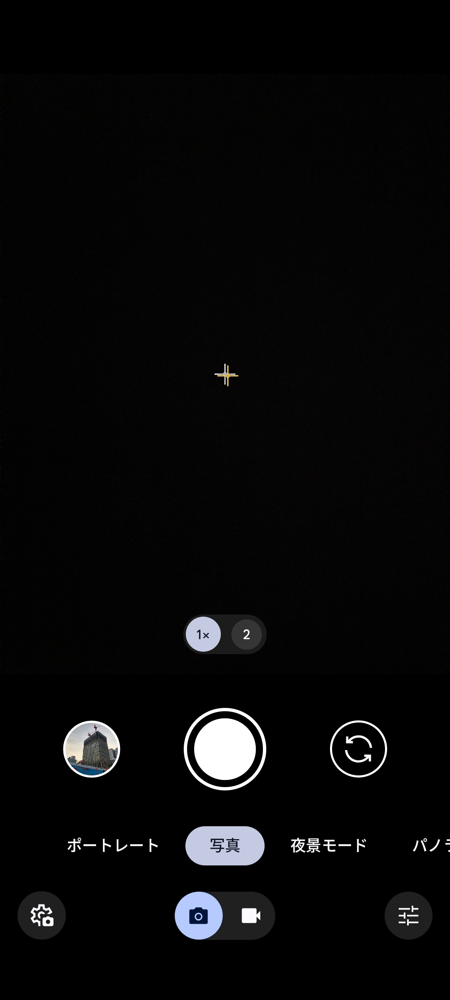
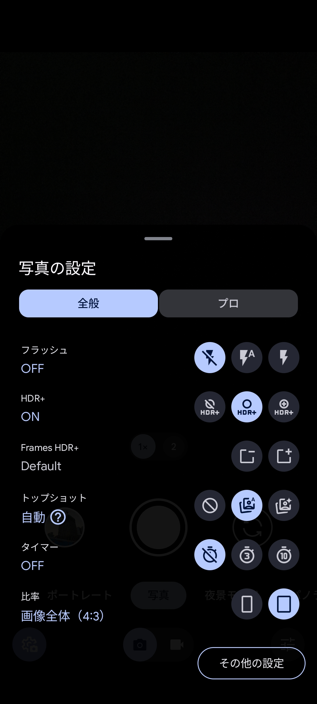

【Google Pixel】GCamでシャッター音を消す方法
Pixelの標準カメラアプリにはModが存在する
Pixelの標準カメラアプリでのシャッター音無音化はroot化しない限り不可能である。 カメラ無音化Plusを使うという方法もあるが、カメラアプリ起動直後は無音化されなかったり、カメラアプリの起動が検知されなかったりと動作が不安定である。 そこで、標準カメラアプリのModであるGCamを使うという方法がある。 Pixelのカメラアプリは非常に優秀で、ハードウェアが弱くてもソフトウェアの力できれいな写真が撮れる。 このため海外の開発者たちがそのアプリを他のスマホでも使えるように移植したアプリがGCamとなる。 ここではこのGCamを標準カメラアプリの代わりに使用してシャッター音を消す方法を解説する。
方法
ここではGCamでシャッター音を消す方法を解説する。 画像はvivo X100 Proを用いているが、Pixelでも同様の手順で実行できる。
方法
1.Google Camera Portsで任意のapkをダウンロードしてインストールする。
以下のリンクからGCamのapkをダウンロードしてインストールする。 中には正常に動作しないものもあるので、1つ1つ試してみる。
2.カメラアプリの設定画面を開く


3. "カメラの音" をオフにする
あとはもともとある標準のカメラアプリを無効化するなどしてGCamを起動しやすいようにするといいかもしれない。
デメリット
･アプリを手動で更新する必要がある
apkでインストールしているため自動でアプリが更新されず、再びapkをダウンロードして手動で更新する必要がある。
･開発者の違いに注意する必要がある
アプリを更新する際に、もともとインストールしていたものと異なる開発者のアプリをインストールしようとするとインストールできなかったり、仕様が変わったりする。
プロフィール

高度情報社会の最先端を駆け抜ける